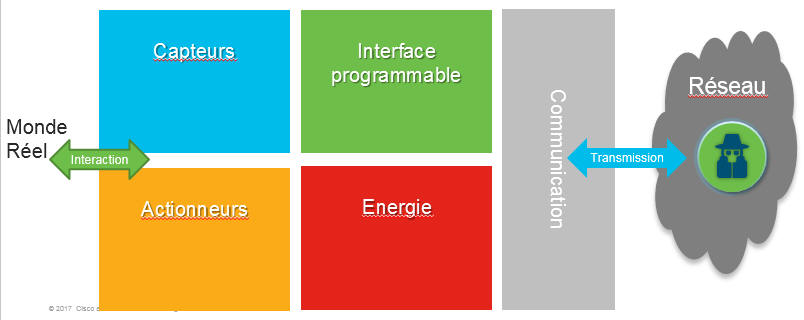
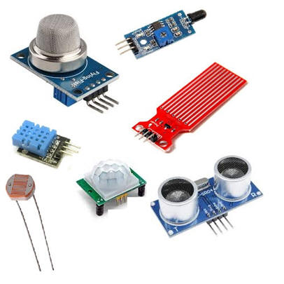
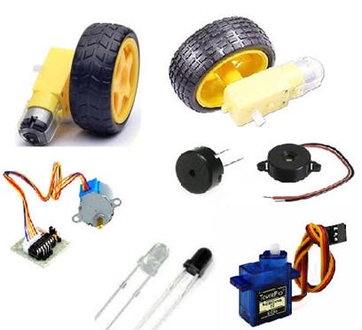
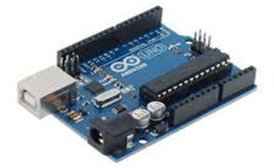
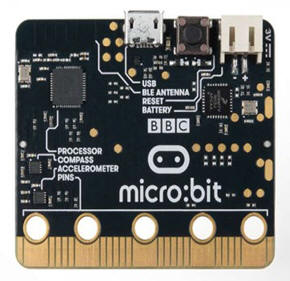
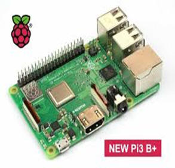
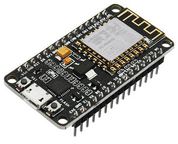
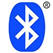

L'Internet des objets (IoT) désigne l'interconnexion de millions d'appareils et de capteurs intelligents connectés à Internet. Ces objets (capteurs et ces appareils ) connectés collectent et partagent des données qui seront utilisées et analysées par plusieurs organismes, dont des entreprises, des villes, des gouvernements, des hôpitaux et des particuliers
Un objet communicant est un objet capable d’interagir en autonomie avec son environnement et d’échanger de lui-même (sans intervention humaine) des informations avec des utilisateurs ou d’autres objets. On distingue 2 types : les objets communicants non connectés et les objets communicant connectés (ou encore «objets connecté»)
Dans ce type d’objet, l’échange d’informations ne s’effectue qu’avec l’utilisateur propriétaire de l’objet via un terminal ( tablette, Smartphone, ordinateur, ….) munie d’une application ou un logiciel. Le terminal et son application constituent une IHM (Interface Homme Machine). Il y a une certaine proximité entre l’objet communicant et le terminal.
Dans ce type d’objet communicant, l’échange d’informations s’effectue par connexion à un réseau de communication à grande échelle (et donc potentiellement à grande distance), en général Internet, avec d’autres objets, des personnes, des organismes (collecteurs de données), des serveurs de stockage et de traitement à distance (Data center).

Ils permettent de traduire une grandeur physique (un phénomène) en un signal électrique. Ce dernier est ensuite numérisé pour être transmis au système informatique. Par exemple : un capteur de température permet de traduire l’amplitude de la température en une tension électrique. Cette dernière est numérisée puis transmise.

Ils permettent d’agir dans le monde physique, c’est-à-dire, changer son état. Actionneurs couramment utilisés :

| Arduino | Micro:bit | Raspberry Pi | NodeMCU |
|  |  |  |  |
|  |
BluetoothS'étant imposée dans le secteur de l'informatique et dans différents marchés de produits de consommation, la technologie Bluetooth est un acteur incontournable pour les télécoms de courte portée. |
|
ZigBeeCette technologie de réseau sans fil standard de l'industrie cible les applications nécessitant des échanges de données relativement peu fréquents à de faibles vitesses de transmission sur un espace restreint et dans une portée de 100 m. |
|
|
WiFiLe WiFi repose sur les ondes de fréquence radio pour permettre à deux appareils de communiquer entre eux. . En général, le WiFi est utilisé pour la connexion de routeurs Internet avec les pc ou les téléphones mobiles |
Norme : basée sur 802.11n (le plus utilisé) Fréquence : 2,4 GHz / 5 GHz Portée : environ 50m Vitesse de transmission : 150 Mbit/s (600 Mbit/s Max avec 5 GHZ) |
|
CellulaireLes réseaux cellulaires offrent une communication à large bande fiable prenant en charge divers appels vocaux et applications de streaming vidéo.Toutefois, ils imposent des coûts opérationnels et des besoins en énergie très élevés. |
Norme : Sigfox Fréquence : 900 MHz Portée : 30-50 km (environnements ruraux), 3-10 km (environnements urbains) Vitesse de transmission : 10-1 000 bit/s |